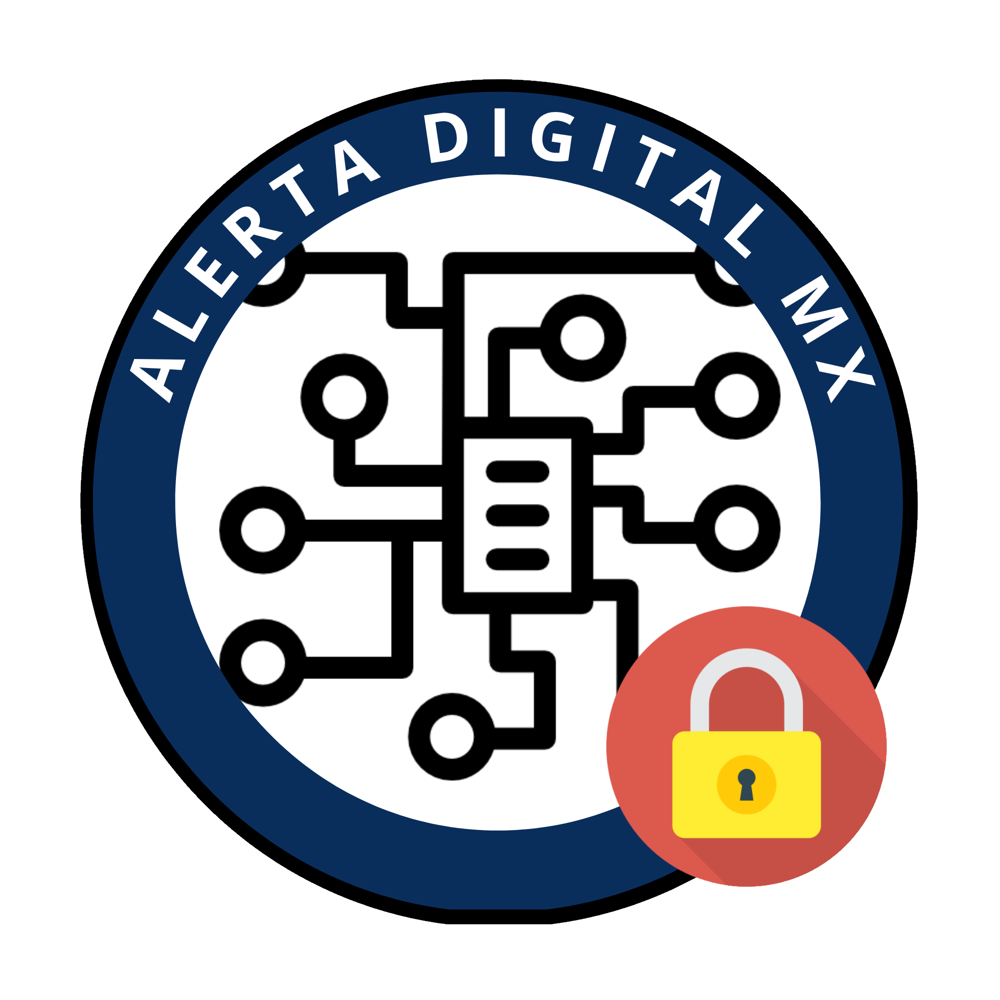

Aquí encuentras, en lenguaje simple, cómo se ven los fraudes digitales más comunes en México, cómo reconocerlos a tiempo y qué hacer si ya caíste. Toda la información proviene de fuentes oficiales.
Es el número de quejas por posible fraude que recibió la CONDUSEF entre enero y junio de 2026: 16.7% más que en el mismo periodo del año anterior. Cuatro de cada diez reclamaciones que recibe la institución son por fraude.
Fuente: Comisión Nacional para la Protección y Defensa de los Usuarios de Servicios Financieros (CONDUSEF).Un mensaje que imita a tu banco, una tienda o una dependencia de gobierno para que entregues tus datos sin darte cuenta.
Así se ve
«Estimado cliente: detectamos actividad inusual en su cuenta. Por seguridad, su acceso será bloqueado en las próximas 24 horas. Valide su información aquí: bancoseguro-mx.net/verificar»
Qué hacer: no des clic en el enlace. Cierra el mensaje, entra a la app o al sitio oficial escribiendo tú la dirección, y verifica ahí si existe alguna alerta real. Ningún banco pide contraseñas ni códigos por correo o mensaje.
Alguien llama diciendo ser ejecutivo de tu banco y usa la urgencia para que no te detengas a comprobar nada.
Así se ve
«Le hablamos del departamento de seguridad de su banco. Detectamos un cargo no reconocido de $12,400. Para cancelarlo necesitamos que transfiera su saldo a una cuenta segura mientras resolvemos el caso.»
Qué hacer: cuelga. Marca tú al número que aparece al reverso de tu tarjeta o dentro de la app oficial y pregunta directamente. Si el cargo era real, ahí te lo confirman.
Es la misma técnica del phishing, pero llega por mensaje de texto o mensajería instantánea, donde los enlaces son más difíciles de revisar.
Así se ve
«Tu paquete no pudo ser entregado por falta de datos. Actualiza tu dirección y paga $28 de reenvío: paqueteria-envios.info/rastreo»
Qué hacer: no abras el enlace. Si dice ser una paquetería, rastrea el envío en el sitio oficial de la empresa. Si es un conocido pidiendo dinero, márcale por teléfono antes de mandar nada.
No hay ningún secuestro. El delincuente provoca pánico para conseguir dinero antes de que la familia logre comunicarse con la persona supuestamente retenida.
Así se ve
«Tenemos a tu hijo. No cuelgues ni marques a nadie o le va a ir mal. Necesitamos un depósito ahora mismo y lo soltamos.»
Qué hacer: mantén la calma y gana tiempo. Desde otro teléfono, pide a alguien que localice a la persona. No des nombres ni datos: si preguntan «¿quién habla?», no respondas con un nombre. No transfieras dinero. Denuncia al 089 (denuncia anónima) o al 911 si hay riesgo inmediato.
Alguien obtiene tu información personal y la usa para abrir cuentas, contratar créditos o hacerse pasar por ti frente a otras personas.
Así se ve
Recibes el estado de cuenta de una tarjeta que nunca solicitaste, o un familiar te avisa que «tú» le escribiste desde otro perfil pidiéndole dinero.
Qué hacer: solicita tu reporte de crédito para revisar si hay productos a tu nombre, reporta a las instituciones involucradas y presenta la denuncia. Si hubo uso indebido de tus datos personales, la instancia correspondiente es la Secretaría Anticorrupción y Buen Gobierno, que asumió estas funciones tras la extinción del INAI en 2025.
Aquí no hay engaño técnico. Entras por decisión propia, y por eso son de los fraudes que más dinero mueven.
Así se ve
«Gana dinero viendo anuncios. Solo 30 minutos al día desde tu celular. Activa tu cuenta con una inversión inicial y sube de nivel para ganar más. Invita a tus conocidos y recibe comisión por cada uno.»
Qué hacer: antes de meter dinero, verifica que la empresa esté registrada en el SIPRES de la CONDUSEF o ante la CNBV. Si el rendimiento depende de reclutar personas, no es una inversión: es un esquema piramidal. Si ya invertiste, deja de reclutar y avisa a quien hayas invitado.
No es un fraude nuevo: es lo que volvió mucho más peligrosos al vishing y al secuestro virtual. La SSPC emitió una alerta por el aumento de reportes en el país.
Así se ve
Recibes una llamada o un audio de alguien de tu familia, con su voz exacta, pidiendo dinero urgente por una emergencia. La voz es real; la persona no está ahí.
Qué hacer: acuerden hoy una palabra de seguridad en familia. Si alguien llama pidiendo dinero urgente, se la piden. Una voz clonada no la sabe. Y cuelga para marcar tú directamente a la persona por su número de siempre.
Los fraudes cambian de forma, pero explotan siempre lo mismo: urgencia, miedo y confianza. Estas reglas aplican sin importar por dónde llegue el intento.
La velocidad importa. Mientras más rápido actúes, mayor es la posibilidad de frenar el daño.s Sigue estos pasos en orden.
Cada institución atiende un tipo distinto de caso. Verifica siempre los datos de contacto en el sitio oficial antes de comunicarte.
Para cargos no reconocidos, fraudes bancarios y cualquier problema con una institución financiera. Puede orientarte y acompañar tu reclamación.
condusef.gob.mx
Para delitos cometidos por medios digitales: extorsión en línea, secuestro virtual, suplantación en redes sociales, sitios y perfiles fraudulentos.
gob.mx/gncertmx
Cuando el problema es el uso indebido de tus datos personales por parte de una empresa o institución. Esta dependencia asumió las funciones del extinto INAI en mayo de 2025.
gob.mx/buengobierno
Un documento en PDF con los pasos a seguir si ya fuiste víctima de un fraude digital, los datos de contacto de cada institución y plantillas de denuncia que puedes llenar y presentar.
Descargar la guía en PDF